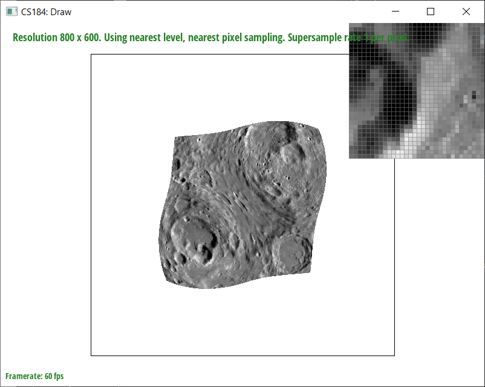

In this assignment, we implemented a basic rasterizer for svg files, converting the given vector image to a bitmap image at a
specified resolution, pixel sampling rate, pixel sampling method, and level sampling method. Based on the preexisting implementation
of the point and line rasterization methods, we started by implementing a rasterizer for triangles, then added a sample buffer on top of
the existing pixel buffer to allow us to perform antialiasing.
We then implemented transforms to allow us to translate, scale, and rotate rasterized polygons based on the transformation matrices
discussed during lecture. For coloring and texturing rasterized triangles, we implemented interpolation using barycentric coordinates and pixel
texture mapping, the latter using two different sampling methods, nearest, and bilinear. Finally, we implemented level sampling, allowing us to
choose appropriate texture scaling using either nearest or linear sampling.
Overall, this assignment gave us a better understanding of the exact steps a vector object must go through before reaching its final screenspace
pixel representation, from being 'pre-rasterized' in the sample buffer and having transforms applied to it, to being sampled and written to a pixel.
It was interesting to observe just how much control over the final product some relatively simple techniques could achieve; just by changing each of the
three sampling parameters (sample number, pixel sampling method, level sampling method), there are dozens of different ways to render the same image.
Task 1
To rasterize triangles, we calculate the bounding box, a.k.a. the smallest rectangle that completely contains
a given triangle. We then iterate within the bounding box and calculate a sample point for each pixel. We then
check if this sample point lies within the triangle using the point-in-triangle test covered in lecture, then fill
the pixel if it is within the triangle.
Because the algorithm's iterations are bounded by the dimensions of the bounded box, it must be no worse than checking
every sample within the box.
basic/test4.svg with the default viewing parameters.
Task 2
To implement supersampling, we maintain a sample buffer that is larger than the actual framebuffer. This sample buffer's size is
determined by the sample rate, which indicates how many samples are taken per pixel.
When rasterizing, the algorithm now considers the supersampling grid; for each pixel, we calculate the color for each sample within that pixel,
then average all the samples within it and write the result to the framebuffer. Essentially, we downsample the higher resolution sample buffer
to the target resolution. We also modified triangle rasterization. For each pixel that might be covered by a triangle, the algorithm iterates
over each sample within that pixel and averages them to determine the color of the pixel. This creates smoother looking edges due to being able
to capture the partial coverage of pixels at the edges of triangles that aren't aligned with our pixel grid, which helps us antialias our triangles
and avoid 'jaggies.'
basic/test4.svg with sample rates 1, 4, and 16.
Task 3
A basic alteration of svg/transforms/robot.svg so that the robot now waves, accomplished by translating each
arm block slightly down or slightly up, for each respective side, rotating each arm block, then rotating each lower arm block.
Task 4
Barycentric coordinates represent a point relative to the vertices of a given triangle, written as (α,β,γ) where α+β+γ=1. In this project, we use
them to find the positions of samples within rasterizable triangles in order to determine those samples' interpolated color or texture coordinates.
A triangle where each vertex is red, green, and blue respectively. The color of each interior pixel was computed using barycentric coordinates.
basic/test7.svg with default viewing parameters and sample rate 1.
Task 5
Pixel sampling is determining what color to render a pixel based off of sampling a base texture. We do this by mapping the screen space sample coordinates (x,y) into
texture coordinates (u,v), first by calculating the barycentric coordinates, then interpolating them with the given texture (u,v) coordinates. We then perform either
nearest neighbor or bilinear sampling to identify the color of the pixel.
In nearest neighbor sampling, we find the color of the sample point simply by multiplying the (u,v) coordinates of the sample by the texture dimensions,
then rounding to the nearest possible texture position and returning its color.
In bilinear sampling, we find every combination of floor/ceiling of the given (u,v) position in order to find the four closest
texture pixels. We then perform linear interpolation to get the weighted average color of those four texture points closest
to the relative position of the sample point and return that color.
From top to bottom: nearest sampling at 1 sample per pixel, nearest sampling at 16 samples per pixel, bilinear sampling at 1
sample per pixel, and bilinear sampling at 16 samples per pixel.
The above figure shows how bilinear sampling creates a much smoother looking image overall, especially at sharp corners like that focused by
the pixel inspector. There will be a large difference between the two methods when the rendered texture's details are at a high frequency, e.g.
are 'sharp' or are characterized by a small number of pixels, like the shown corner; nearest neighbor sampling will not capture such patterns as well
as bilinear sampling.
Task 6
Level sampling is determining how to appropriately scale the texture for the given image, using different resolutions of texture per level. For example, at level 0, we use the
original full resolution texture; as the level increases, we use a lower and lower resolution texture. We use either nearest neighbor or bilinear sampling to determine the appropriate
level to use.
For pixel sampling, nearest is faster than bilinear since there are no interpolation calculations. Both methods use about the same amount of memory. Bilinear sampling generally has more
antialiasing power than nearest sampling.
For level sampling, level 0 and nearest sampling are about as fast as one another, while bilinear sampling is slower due to additional interpolation calculations. Nearest and bilinear sampling require about 33%
more memory as level 0 sampling due to having to store the additional levels of textures. Antialiasing power is strongest for bilinear, less strong for nearest, and least strong for level 0.
Finally, for sample number, speed decreases and memory usage increases as the number of samples per pixel increases. This is because we must store and iterate through a larger sample buffer as the number of samples increases.
Antialiasing power increases as the number of samples increases since more details of the object being rendered can be captured at each pixel.

From top to bottom: L_ZERO and P_NEAREST, L_ZERO and P_LINEAR, L_NEAREST and P_NEAREST, and L_NEAREST and P_LINEAR. Note the increase in antialiasing power with each successive mode.